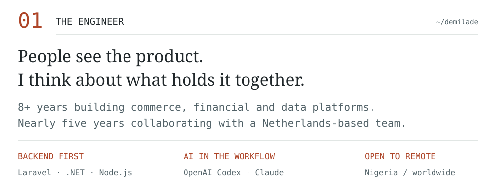
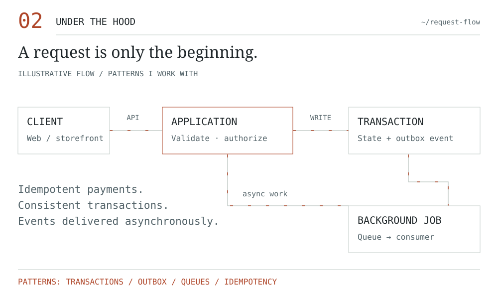
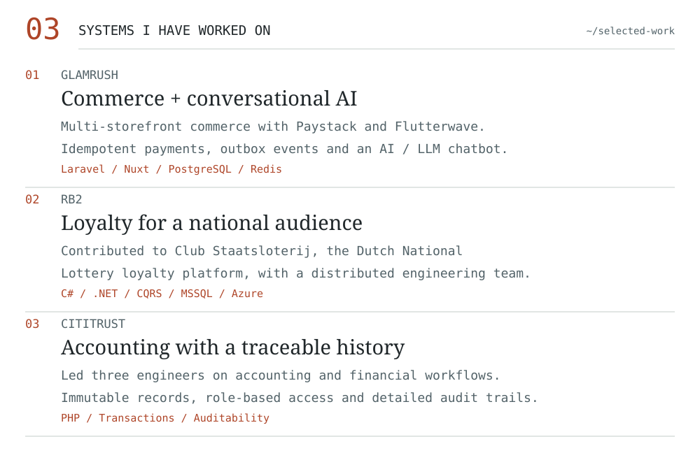
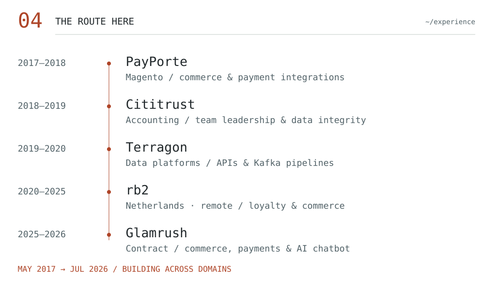
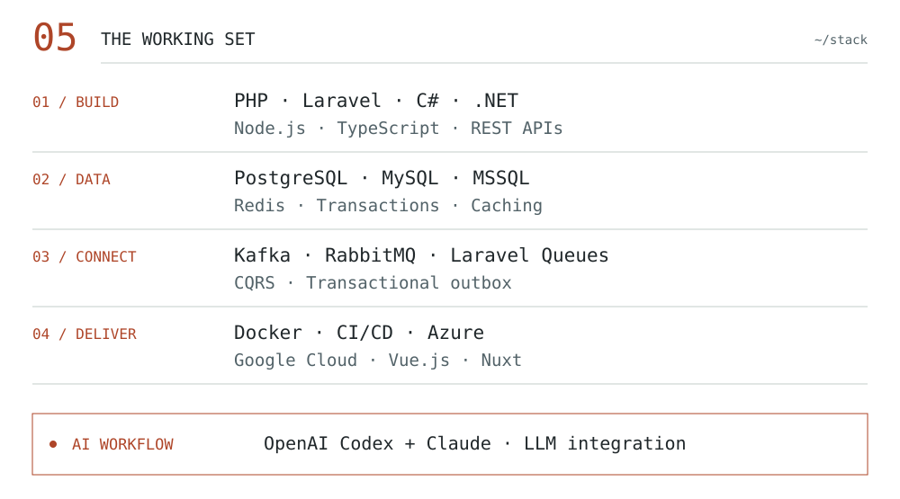
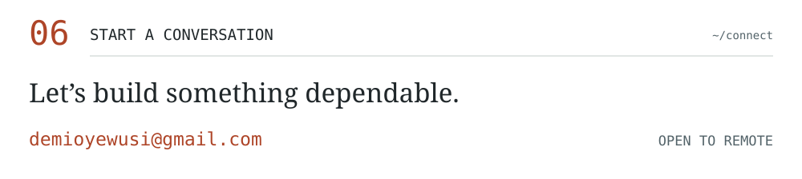

D/O — ENGINEERING INDEX
Demilade Oyewusi
Senior Backend Engineer · Nigeria / Remote
Reliable systems. Thoughtful architecture.
LINKEDIN ↗ / EMAIL ↗ / REPOSITORIES ↗



On GitHub: Sell Spree ↗ — a backend service for a digital marketplace.


Read the profile as text
Backend engineering across commerce, finance, loyalty and data platforms. Full accessible profile text is included in README.md.
